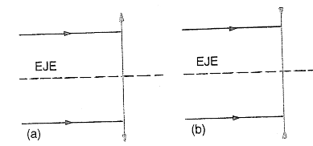
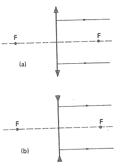
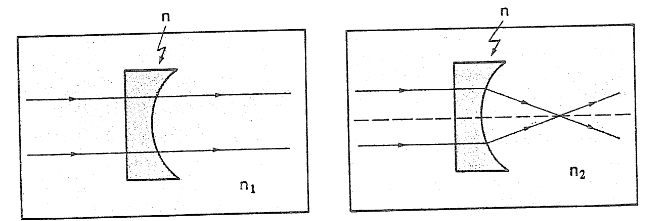
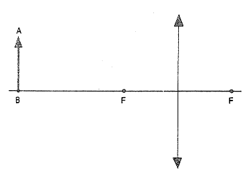
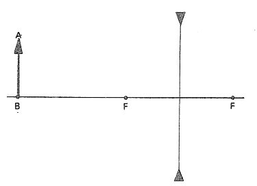

Preguntas conceptuales
Complete las figuras de este ejercicio trazando las trayectorias de los rayos luminosos indicados, luego de atravesar las lentes. La distancia focal de ambas es igual a 5 cm.

En la figura de este ejercicio se tienen dos lentes, las posiciones de sus focos y los rayos luminosos que salen de ellas. Trace en la figura los rayos incidentes que produjeron tales rayos emergentes.

En la figura de este ejercicio se ve una lente de plástico, cuyo índice de refracción es n = 1.7, sumergida en dos medios con índices de refracción n1 y n2.
Esta lente, al aire, ¿es convergente o divergente?
Observando las trayectorias de los rayos luminosos que se señalan en la figura, diga si el valor de n1 es mayor, menor o igual a 1.7.
Y el valor de n2, ¿es mayor, menor o igual a 1.7?

La figura de este ejercicio muestra un objeto AB colocado frente a una lente convergente, y las posiciones de los focos de ésta.
Trace el diagrama que permita localizar la imagen de este objeto proporcionada por la lente.
La imagen obtenida, ¿es real o virtual? ¿Es derecha o invertida? ¿Y mayor o menor que el objeto?

Suponga que el objeto del ejercicio anterior se acercara a la lente y quedara situado a una distancia Do comprendida entre f y 2f.
Trace el diagrama de localización de la imagen del objeto.
Entonces, conforme un cuerpo es acercado a una lente convergente (sin sobrepasar al foco), ¿su imagen permanece real? ¿Se acerca o se aleja de la lente? ¿Aumenta o disminuye de tamaño?
Considere de nuevo la lente y el objeto del Ejercicio 4. Sitúe ahora a AB entre el foco y la lente.
Localice mediante un diagrama la imagen del objeto en esta posición.
Describa las características de esta imagen.
Un objeto AB se encuentra frente a una lente divergente, como muestra la figura de este ejercicio.
Trace un diagrama para obtener la imagen de este objeto y describa las características de su imagen.
Acerque el objeto y colóquelo entre el foco y la lente. Trace el diagrama, localice la imagen y describa sus características.
Observando los diagramas que trazó en (a) y (b), ¿a qué conclusión puede llegar acerca de la naturaleza y el tamaño de la imagen proporcionada por una lente divergente?

Ejercicios
En el Ejercicio 4 suponga que la distancia focal de la lente es f = 4 cm, y que el objeto AB se encuentra situado a una distancia Do = 12 cm.
Usando la ecuación de las lentes, determine la distancia, Di de la imagen a la lente.
¿Cuál es el aumento proporcionado por la lente?
¿Qué significado tiene la respuesta de la pregunta (b)?
Sus contestaciones en este ejercicio, ¿concuerdan con el diagrama trazado en el Ejercicio 4?
En la figura del Ejercicio 7 suponga que la distancia focal de la lente es de 4 cm y que el objeto se encuentra a 12 cm de ella.
Calcule la distancia Di de la imagen a la lente.
Determine el aumento proporcionado por esta última.
Si el tamaño del objeto es AB = 10 cm, ¿cuál es el tamaño de la imagen A′B′?